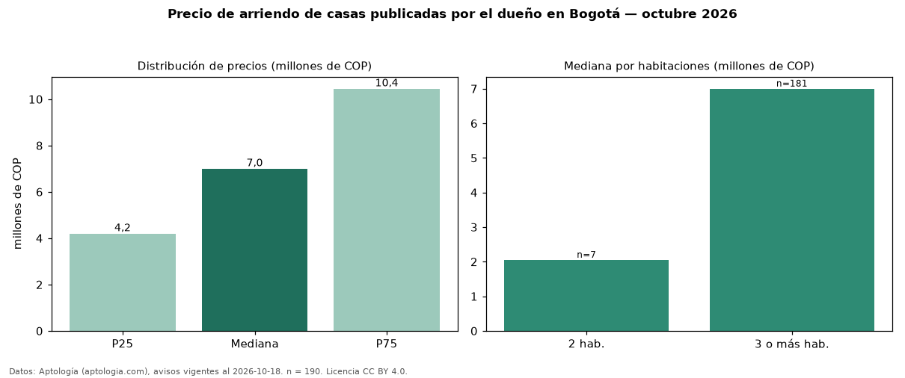

Precio de arriendo de casas publicadas por el dueño en Bogotá — octubre 2026
En Bogotá, la mediana de canon mensual de casas publicadas por el dueño es COP 7,00 millones, según 190 avisos vigentes. Eso es 30 % menos que la mediana de todas las casas en arriendo de Bogotá (COP 10 millones, n = 2.512); este segmento reúne el 8 % de esos avisos. Por metro cuadrado, la mediana es COP 27.596/m² al mes (n = 184), 8 % por debajo del conjunto de referencia (COP 30.000/m²). El área mediana anunciada es 262 m². La mitad central de los avisos va de COP 4,20 millones a COP 10,45 millones (razón 2,5), una dispersión alta. El segmento con más oferta es el de 3 o más habitaciones (181 avisos, mediana COP 7,00 millones); pasar de 2 habitaciones a 3 o más habitaciones cambia la mediana +241 %. La administración mediana declarada es COP 714.900 al mes (n = 42), aparte del canon. El estrato más frecuente es 4 (35 % de los avisos con estrato). Datos: Aptología (aptologia.com), CC BY 4.0 — https://www.aptologia.com/arriendo/bogota. Archivos: PDF, CSV con las cifras y gráfica PNG.

| Avisos únicos | 190 |
|---|---|
| Percentil 25 | COP 4.200.000 |
| Mediana | COP 7.000.000 |
| Percentil 75 | COP 10.450.000 |
| Mediana por m² | COP 27.596 |
Fuente: avisos vigentes de portales inmobiliarios recopilados por Aptología, deduplicados (mínimo 30 avisos únicos por celda). Precios pedidos, no cerrados. Fecha: 2026-10-18.